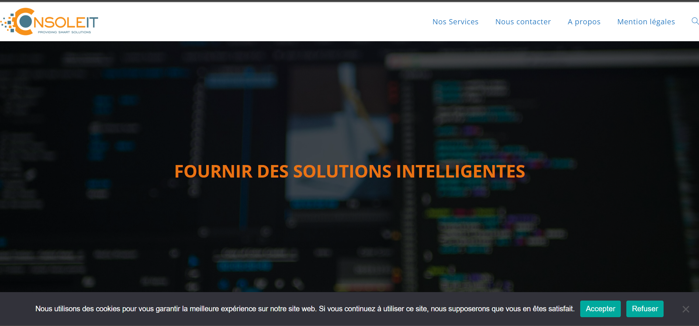
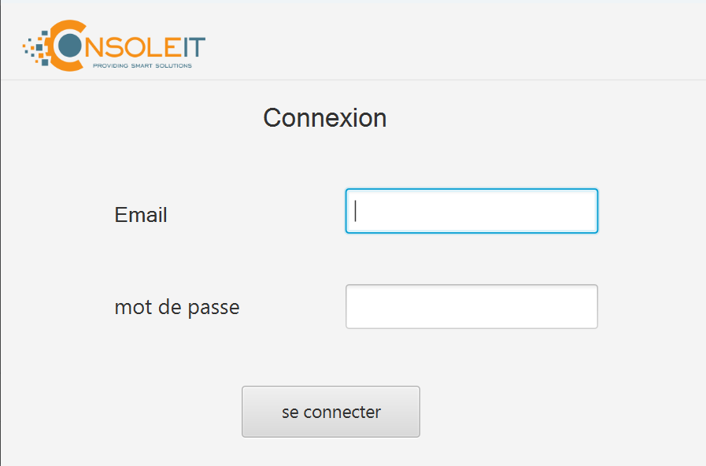
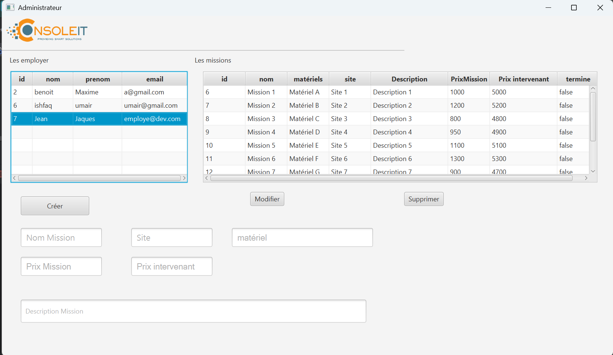
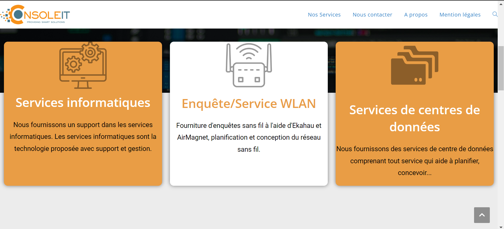

Projet de Fin d'Études / Alternance
Console-IT — Solution Mobile de Gestion de Terrain
Rôle
Développeur Full-Stack
Stack Technique
Période
2023 — 2025
Le Challenge
L'objectif principal était de centraliser la gestion des techniciens sur le terrain. Face à une fragmentation des outils existants, il était impératif de concevoir une application mobile unique capable de répondre aux exigences métiers spécifiques de Console-IT.
Le défi technique majeur résidait dans la capacité du système à garantir la persistance des données en zone blanche (connexion instable), tout en assurant une synchronisation bidirectionnelle fluide avec l'inventaire matériel centralisé.

Fonctionnalités Clés
Géolocalisation
Suivi en temps réel des interventions pour une optimisation intelligente des tournées et une réactivité accrue.
Inventaire Portable
Flux de gestion du matériel (stock, sorties, retours) opéré directement depuis le mobile via lecture de codes-barres.
Mode Offline (V2)
Stratégie de cache local robuste assurant la continuité de saisie et synchronisation atomique dès restauration du réseau.
Dashboard Manager
Interface d'administration web centralisée pour le pilotage des équipes, l'analyse des KPIs et la gestion des tickets.
Architecture & Qualité Logicielle
Sécurité & Auth
Implémentation d'une architecture REST sécurisée par JWT (JSON Web Tokens) avec gestion de refresh tokens.
Data Layer
Utilisation de Knex.js pour la gestion des migrations et requêtes SQL, garantissant la scalabilité du schéma PostgreSQL.
Workflow Git
Adoption du Gitflow avec branches de features dédiées et revues de code systématiques en Peer Programming.
Typage Fort
Développement intégral en TypeScript pour réduire la dette technique et assurer une maintenance pérenne.
Aperçus de l'Interface


